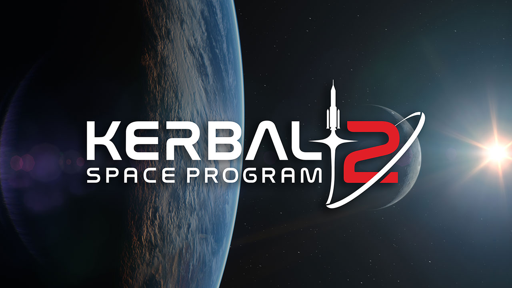

 Kerbal Space Program 2 is an upcoming space flight simulation video game developed by Intercept Games and published by Private Division. It is the sequel to 2015's Kerbal Space Program and is scheduled for release in 2022 for Microsoft Windows, PlayStation 4, PlayStation 5, Xbox One and Xbox Series X/S.[2]